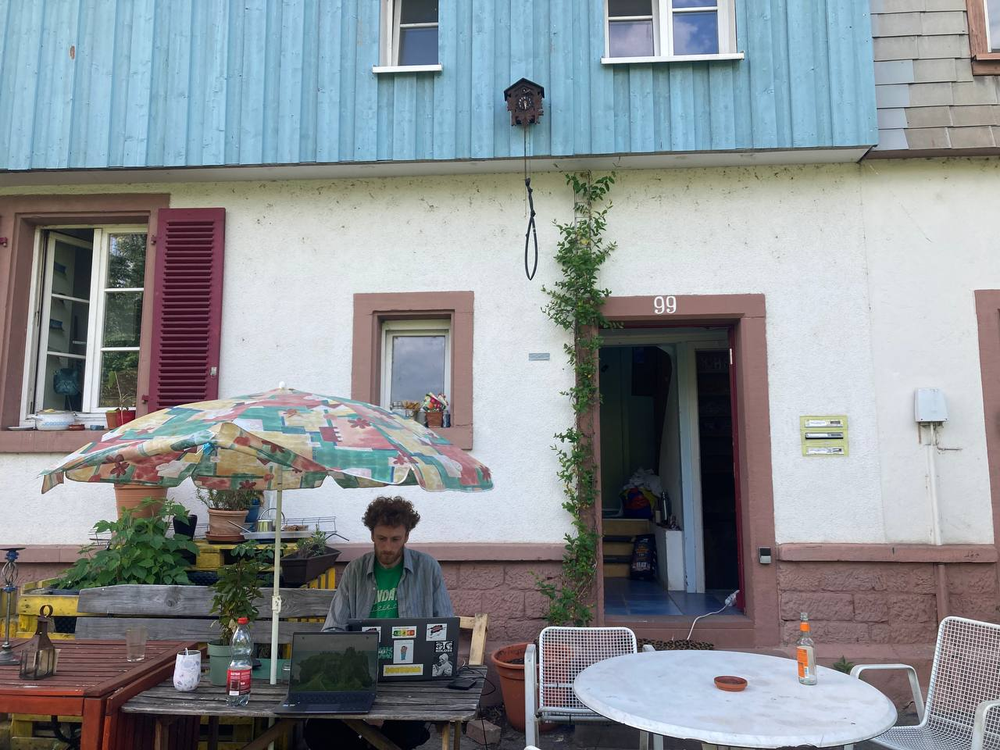
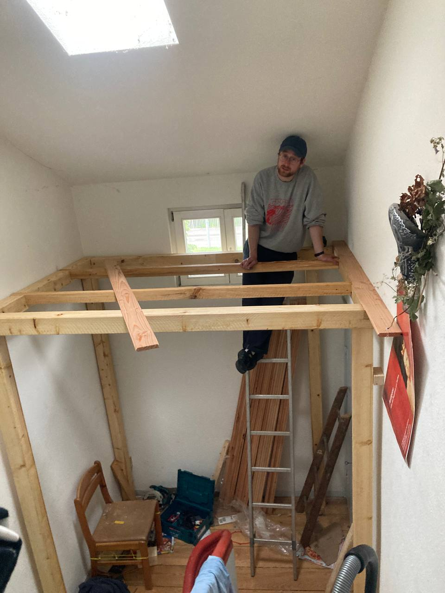

Klickt auf die jeweilige Überschrift, um den Text auszuklappen.
Hallo liebe Leute,
viele von euch kennen wir, mit manchen teilen wir nun seit längerem schon einen mehr oder weniger regen Emailaustausch und sind so zumindest in Schriftform miteinander vertraut. Länger denken wir uns schon, wie gern wir eigentlich auch mal alle zusammenkommen, auf die tolle gemeinsame Zeit anstoßen und so die Gesichter hinter den Mails und Kapitalanlagen wiedersehen oder kennenlernen möchten.
Deswegen möchten wir mit dieser Mail gern mal vorfühlen, ob ihr da auch Lust drauf habt. Angedacht ist ein kleines Zusammenkommen zu Kaltgetränken und Snacks zur frühen abendlichen Stunde in unserem Garten um den September/ Oktober herum.
Gebt uns gern Rückmeldung, ob ihr Interesse daran habt und welcher Monat/Zeitraum euch taugen würde. Wir kommen danach konkreter wieder auf euch zurück.
Außerdem dachten wir, wir nutzen die Gunst dieser Mail auch, um mal hier mal wieder ein kleines Zwischenupdate von uns zu abzugeben.
Ansonsten bleiben wir den Vorurteilen einer jungen, fluktuierenden Wohnendenschaft treu und bekunden hier mal wieder Neuerung in der Wohnkonstellation. Mit Freude dürfen wir unseren neuen Mitbewohner und nun 10. Mitglied im Bunde begrüßen: unseren Kater Arschi (* Der Name “Arschi” symbolisiert die neckend-liebevolle Beziehung die wir mit unserem 4-beinigen Freund pflegen und in der wir auf sein facettenreiches Wesen zwischen Kratzbürstigkeit und Kuscheligkeit Bezug nehmen). Zwar schon lange präsent, ist er nun offiziell adoptiert. Das mit den damit erworbenen Rechten wie einer vollgefüllten Futterschale auf jeder Etage und einer Katzenklappe (die aufgrund Arschis Größe eigentlich eine Hundeklappe ist) auch Pflichten und Verantwortungen in der Hausgemeinschaft einhergehen, ignoriert er zwar noch mit der eleganten Arroganz eines Katers, aber wir sind zuversichtlich.
Der Ignoranz Arschis um einen Ausgleich bemüht, ist der die Kreativität und Tüftelei unseres Mitbewohners Marius kein Halt geboten. Ganz mit dem Zahn der Zeit, verfügen wir nun über einen vollautomatisierten Kontoauszug-Emailversand. Danke Marius!
Ansonsten: wer es gar nicht abwarten kann, uns persönlich anzutreffen, muss gar nicht auf unsere anstehenden Zusammentreffen warten, sondern kann uns direkt life live und in Farbe jeden Mittwochnachmittag auf dem Vaubanmarkt antreffen. Denn so semi fluide wie unser Wohnumfeld ist auch die Direktkreditsituation eines Mietshäusersyndikats. In dem Konzept: „lieber von 1000 Freunden die Tacken als eine böse Bank im Nacken“ ist es normal, dass Freunde ihre Kredite zurücknehmen und wir immer mehr oder weniger intensiv nach Neuen suchen. So sind auch wir mal wieder auf dem Markt anzutreffen. Und auch hier nochmal ein kleiner Rundruf: wenn ihr Menschen kennt, die ein bisschen zu viel auf der hohen Kante haben, freuen wir uns selbstverständlich auch sehr über eine Unterstützung ohne den Umweg über den Markt! So gern wir ihn auch haben..
Also, genug von uns erstmal! Meldet euch gern bei uns wegen Rückmeldung zum Zusammenkommen, bei Durchreise und Unterkunftsnotwendigkeit oder Kontakt zu potentiellenpotenziellen Direktkredit-Unterstützenden, wir freuen uns immer, von euch zu hören!
Liebe Grüße, eure F99 <3
Hallo liebe Unterstützer:innen, hier mal wieder ein Update von uns. Vieles hat sich verändert und einiges ist noch wie immer.
Angesichts der stetig rechter werdenden Politik sind wir froh, mit unseren Veranstaltungen Menschen in unserem Umfeld unterstützen, und so einen Beitrag zur Diversität der Gesellschaft beitragen zu können.
Im September haben wir anläßlich eines Falls sexualisierter Gewalt eine Solidaritätsveranstaltung organisiert und damit das Geld für die Gerichtskosten der betroffenen Person gedeckt. Das Publikum durfte sich über feinsten live HipHop gemischt mit tanzbarer Bass-Musik freuen. Im November haben wir eine weitere Person mit einer Solidaritäts-Veranstaltung finanziell helfen können, und sie darin unterstützt sich ihrer künstlerischen Arbeit weiter widmen zu können. An diesem Abend wurde Funk und Soul mit Vinyl aufgelegt und die Hüften wurden fleißig geschwungen.
Nun kommen wir zu Hausinternen Neuigkeiten. Unsere Luka ist im September zu einem Erasmus nach Istanbul aufgebrochen und zur Zwischenmiete wohnte jetzt Tobi in ihrem Zimmer. Auch Elias ist zum studieren für ein halbes Jahr nach Ljubljana gegangen und für ihn wohnte Marci bei uns. Beide sind wohlauf und wieder im trauten Heime. Wie schnell doch die Zeit vergeht. Marci wird auch weiterhin bei uns wohnhaft bleiben, da Alina leider die Stadt verlässt, und dadurch ein Zimmer dauerhaft frei wird.

Ende 2024 hatten wir außerdem in einem Plenum das Thema Mietpreise, um zu überprüfen ob die Miete, die wir aktuell zahlen noch mit den Kosten und Ausgaben des Hauses übereinstimmt. Wir haben daraufhin die Nebenkosten in den Verträgen senken können und den Solidarausgleich für die großen Zimmer abgeschafft. Vorher haben die kleineren Zimmer etwas mehr gezahlt als sie müssten, damit die großen Zimmer nicht so teuer sind. Da nun aber die Nebenkosten gesunken sind und alle sich einig waren, haben wir diese Regelung abgeschafft.
Es gibt auch ein paar Instandhaltungsprojekte: Zum einen wurde im 1. OG ein zusätzliches WC in den Flur gebaut, damit Gäste auf unseren Veranstaltungen nicht zwingend in unsere Wohnungen gehen müssen. Außerdem ist im Flur im 2. OG ein Gästebett für Freund:innen auf der Durchreise entstanden. Unser zugezogener Schreiner Marci hat sich mit der vereinten Frans-Power diesem Projekt gewidmet und es ist ganz wunderbar geworden! Die Durchreisenden, Betten- und Hausbesucher sagen Danke!

Anfang Februar 2025 fand zudem in Freiburg eine Mitgliederversammlung
des Mietshäuser Syndikats statt (Solidarischer Verbund von bundesweit
mittlerweile über 200 Hausprojekten, dem auch die Freiau99 angehört).
Vor 35 Jahren würde das Bündnis, „Häuser in Selbstorganisation“ in
Freiburg gegründet und auch die diesjährige Freiburger MV hatte eine
historisch anmutende Dimension. Bei der vorangegangenen
Mitgliederversammlung in Bremen wurde das Klausurjahr beschlossen.
Klausurjahr deshalb, weil in den Mitgliederversammlungen des Mietshäuser
Syndikats - die stets ein wichtiges Entscheidungsinstrument, aber auch
eine schöne Möglichkeit zum in-Kontakt-kommen mit anderen Projekten und
deren tollen Einwohnis bietet - schwerwiegende Arbeitsfelder bearbeitet
werden sollen, während das Wachstum der Struktur in diesem Zeitraum eine
nebensächliche Rolle einnimmt. So werden neue Projekte nur in “kleinen
MVs” in die Struktur aufgenommen, die sich ausschließlich damit
beschäftigen. Wir von der Freiau99 waren bei der Mitgliederversammlung
dabei und halten diese Entscheidung für sinnvoll.
Der Frühling nach wie vor im Ankommensprozess und wir freuen uns darauf sehr viel Zeit im Garten verbringen zu können, und dem Apfelbaum beim Blühen zuzusehen. Ihr könnt uns nun auch wieder regelmäßig zu einem kleinen Plausch mit unserem Stand auf dem Markt in Vauban antreffen. Dort wollen wir auch wieder anderen Menschen von unserem Projekt berichten und so neue Direktkreditgeber:innen zu finden.
Vielen Dank, dass du bis hierhin gelesen hast. Wir danken auch weiterhin für die Unterstützung und das Interesse an unserem Projekt. Wir werden dich weiterhin informieren und wünschen bis zum nächsten Newsletter alles Gute und einen schönen Start in den Frühling/Sommer!
Liebe Grüße Die FREIAU99